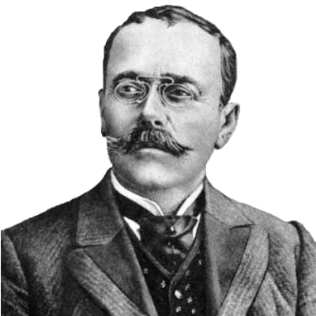

Three Poets

Februarie 13, 1852 – Iunie 9, 1912
Stuff about I.L. Caragiale
More stuff.
A fost un dramaturg, nuvelist, pamfletar, poet, scriitor, director de teatru, comentator politic și ziarist român. George Călinescu îl considera a fi cel mai mare dramaturg român și unul dintre cei mai importanți scriitori români. A fost ales membru post-mortem al Academiei Române.Even more stuff.
Adolescentul Iancu a început să scrie poezii în taină, dar înainte de debutul literar a fost fascinat de performanțele teatrale ale unchiului său, Iorgu Caragiale, actor și șef de trupă, fixată la București sau ambulantă. În 1868 a obținut de la tatăl său autorizația de a frecventa Conservatorul de Artă Dramatică, în care fratele acestuia, Costache, preda la clasa de declamație și mimică. În 1870 a fost nevoit să abandoneze proiectul actoriei și s-a mutat cu familia la București, luându-și cu seriozitate în primire obligațiile unui bun șef de familie. În același an a fost numit copist la Tribunalul Prahova.Yet more stuff. Can you believe it?
În 1871, Caragiale a fost numit sufleor și copist la Teatrul Național din București, după propunerea lui Mihail Pascaly. L-a cunoscut pe Eminescu când tânărul poet, debutant la Familia, era sufleor și copist în trupa lui Iorgu. Din 1873 până în 1875, Caragiale a colaborat la Ghimpele cu versuri și proză, semnând cu inițialele Car și Policar (Șarla și ciobanii, fabulă antidinastică).© 2010 Nobody at allContact